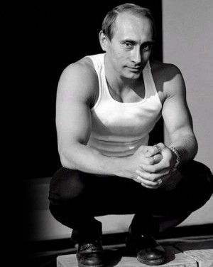

-
After Twenty Years
by Greg Afinogenov September 8, 2011

I am sitting with two of my oldest family friends in a pleasant Georgian restaurant in Moscow. It is early August, 2011. The food, like the neighborhood—everything around here is named after Ukraine—is one of those latent reminders of empire that continue to go completely unremarked in Russia, regardless of geopolitical vicissitudes. It is so delicious that we gorge ourselves on appetizers and give up on entrées completely. After three glasses of wine (for me, a decent dry red, something that less than a decade ago would have been a remarkable find in a place like this) conversation flows briskly, and the usual topics—life in the States, dating, vacations, food—are quickly exhausted. I sit quietly for a bit and, eventually, manage to ask: so, the anniversary of the August 1991 putsch is this month, are you celebrating?
My friends, S and his wife T, like my father and mother, are in their mid-40s, meaning they were all graduating from Moscow University together in the heady perestroika climate of the late 1980s (of which my generation of Russian twentysomethings sometimes seems the only tangible reminder). S was even a Soviet hippie; he rode the rails according to a schedule, known as “The System,” that enabled properly-equipped flower children to avoid conductors and travel from city to city essentially for free. He likes to tell stories about smoking bad pot with the members of a niche—though, like all of them, semi-legendary—Soviet art-rock band. But their whole generation was vaguely countercultural in those days. My father had a Communist Youth League-issued Soviet flag that he kept around expressly for the purpose of using it as a tablecloth; his friend owned a bust of Lenin to which he would offer sacrifices before major exams and which he would beat on the head if the results were unsatisfactory; my mother’s ex-husband demonstratively flushed his election ballots down the toilet. I learned that this was not just a fluke when I watched Robin Hessman’s documentary My Perestroika a few months earlier and saw a procession of the same types of people telling the same stories. My parents’ generation were almost the Baby Boomers of their time.
I tell you this because I want to underscore how unexpected it was to hear—instead of a half hour or so of complacent Boomer-style reminiscence about how bliss it was in that dawn to be alive, but to be young was very heaven, and so forth—only a couple of seconds of embarrassed silence. Then T cleared her throat and said, “Well, you see, for us what August 1991 meant was the beginning of the ‘90s. Things were really very tough. We don’t see it as something to celebrate.” “But it was the end of the Soviet Union!” I protested, “People in the streets! Don’t you think it’s a big deal?” S chimed in: “I remember when I heard there were people protesting in the streets. I went to take a look. It was bullshit. No one knew what they were doing there. They were just hanging out and drinking. I saw two drunken assholes fighting over a bottle of vodka. That’s all it was. Drunken assholes fighting.”
This, in fact, was not an inaccurate summary of the high politics either. On August 19, 1991, several leading, mildly-to-strongly hardline members of the state and Communist Party apparatus tried to seize power by locking up Gorbachev in his dacha, moving tanks into the capital, and forming a “State Emergency Situation Committee.” When they held a press conference—now visible in its unimpressive entirety on YouTube—it was clear that they were not up to the task: the country saw on its television screens the bleary, bored, and visibly drunk faces of two generations of apparat inbreeding. After street protests in which the army refused to cooperate with the putschists, Boris Yeltsin, already known for the alcoholism that would soon make him a global laughingstock, swooped in and definitively established the sovereignty of Russia (or rather, the Russian Soviet Federated Socialist Republic) vis-à-vis the Soviet Union by changing the national flag. By August 23, he had disbanded the Communist Party of the RSFSR—an act approximately comparable to Joe Biden announcing the immediate nationalization of the assets of every American corporation worth over $1 billion. (The presidential decree cheekily pointed out that the Party was “not registered in accordance with established procedures.”)
The history seems straightforward. It doesn’t seem substantially different from the triumphs of this year’s Arab Spring. In that light, the reactions of my friends seem bizarre and inexplicable. But they aren’t alone. A poll released this month to coincide with the anniversary of the coup reveals that only 10% of Russians consider the defeat of the putschists a victory for democracy, while 39% think of it as a “tragic event with ruinous consequences for the country and its people.” In order to figure out what this statement means, it’s necessary to understand the meaning of “the 1990s,” as a general term, for Russians today.
When post-Soviet Russia emerged blinking into the light, it very quickly became clear that it was not the protesters in the street, or even the drunken assholes in the government, who were calling the shots in the new regime. Instead, it was a whole crew of people long ready for a transition to capitalism: not just the factory directors who rushed to privatize and incorporate their giant, often city-sized fiefdoms, but also hotshots from the Communist Youth League, “cooperators” who had begun to pursue private enterprise under the auspices of Gorbachev’s perestroika, and a host of others who had their fingers on just enough power and capital to position themselves for a running start after the Soviet collapse. The rigged auctions by which state property was handed out to these entrepreneurs would soon become Exhibit A for accusations that Yeltsin’s government was hopelessly corrupt or incompetent or both. Meanwhile, in a hack scheme, regular people could obtain “privatization vouchers,” redeemable for shares in newly-privatized state enterprises. In practice, the vouchers soon devalued rapidly, and the hordes of investment funds set up to repurchase them from the population—even the few that were not based on fraud—rarely produced any benefit to their small shareholders. The wealth that, in the Soviet Union, had been controlled by the State and the Party was now controlled by an even smaller circle of oligarchs with considerably less regard for legal niceties.
The authority of the government was collapsing too. Subsequently, the Yeltsin cabinet defended itself with the claim that there was nothing it could do—its only option was to give a stamp of legality to the widespread looting happening all across the country and thereby to preserve at least some nominal claim to authority. (Actually, this is probably the most plausible explanation—conspiratorial accounts of “shock therapy” continue to proliferate, but they are both less elegant and less believable.) Propped up by massive IMF loans whose funds mostly vanished mysteriously soon after they arrived, the country fell into catastrophic debt. Harvard Business School experts swooped in to reap massive salaries advising the politicians on how to create an “economic miracle” along neoliberal lines. This particular disaster was especially galling, administered as it was by Russia’s former Cold War adversary. A war begun in an attempt to prevent the tiny republic of Chechnya from seceding ended in an ignominious and humiliating defeat. Predictably enough, nationalist and (bizarrely, given the country’s obsession with its victory in World War II) neo-Nazi groups sprung up, like mushrooms after the rain.
Daily life was no more encouraging. Stores were empty. The quiet residential streets of major cities regularly became staging grounds for firefights between organized-crime groups. (Among the most durable legacies of this period are the steel doors that still protect half of Moscow’s apartments.) In the absence of a functioning public or private sector, unemployment soared. Millions lost their savings in high-profile pyramid schemes that seemed to offer their victims an opportunity to become winners in the post-Soviet game—that is, if they hadn’t already lost them to hyperinflation, which hit 2,600% at the end of 1992 and continued rising for several more years.
I don’t want to belabor the point. A complete accounting of all the woes that accompanied the collapse during that decade would take a book, which, fortunately, has already been written several times over. (The best is probably Stephen Kotkin’s Armageddon Averted.) I cite these circumstances only in order to make clear what August 1991 brought into being: the 1990s as a fact, yes, but also the 1990s as a national myth. The credible claim to have brought the country out of the 1990s and into the realm of “stability” is the ideological centerpiece of the political configuration associated with Vladimir Putin.
In a 2005 letter to the Federation Council—Russia’s upper legislative house—Putin made the claim, subsequently cited over and over again in the Western press, that “the fall of the Soviet Union was the greatest geopolitical catastrophe of the century.” To a non-Russian ear, this sounds very close to an argument for the restoration of the USSR: “fall,” on this reading, is an attribute of “Soviet Union.” In context, however, it’s clear that what he is talking about is not “the fall of the Soviet Union,” but “the fall of the Soviet Union”—or “the collapse,” for short. Here’s the original passage:
Above all it is necessary to acknowledge that the fall of the Soviet Union was the greatest geopolitical catastrophe of the century. For the Russian people it became a real tragedy. Tens of millions of our countrymen and fellow citizens found themselves outside Russian territory. The epidemic of collapse also spread to Russia itself.
Citizens’ savings became worthless, old ideals were destroyed, many institutions were disbanded or hastily reformed. The country’s integrity was violated by terrorist intervention and the subsequent Khasavurt capitulation [in the First Chechnya War]. Oligarchical gangs, possessing unlimited control over information streams, served only their own corporate interests. Mass poverty began to be seen as a norm. And all this happened against a background of severe economic collapse, financial instability, and the paralysis of the social sphere.
It is against this background that Putin stakes his claim to authority as the leader of a resurgent Russia.
So why does the American commentariat insist on reading the Putinist rejection of the 1990s as a rejection of liberal democracy and a defense of authoritarianism? To be sure, “stability” has meant a dramatic retrenchment in the freedom of speech and of the press (though never quite as dramatic as it is often depicted), and Putin postures as a post-Stalinist strongman at every opportunity. But it is odd to see these fairly contingent features of Putinism depicted as fundamental. In fact, the American view of Putin relies on something else brought into being by August 1991: the American myth of the Russian ‘90s as a period of liberal-democratic flourishing and triumph. It is on full view, for example, in Leon Aron’s heart-stoppingly moronic recent piece in Foreign Policy.
It is important that this myth did not, in fact, take hold until well into Putin’s presidency. Yeltsin, who resolved a full-scale tanks-and-corpses political crisis in 1993 by asserting unilateral executive authority and who was widely viewed as plotting to revise the constitution in order to stay in power indefinitely, certainly provoked his share of anxious clucking from State Department officials. The chaos and economic collapse in Russia was no secret for the Western media. In 1999, the Onion even ran an article headlined “Russian Television Scores Hit With New Game Show Who Wants To Eat A Meal?” Somehow, over the course of the 2000s, the authorized American narrative of post-Soviet history metamorphosed from a woe-filled tale of misery and social breakdown to a nostalgic reminiscence about a lost pre-Putinite golden age of pluralism.
The nostalgia has clear sources. American news- and opinion-makers who experienced Russia in the 1990s now occupy senior positions that allow them to define the conventional wisdom on the subject. They did not live through anything like the experience of the average Russian or even the average Muscovite of the time. In other words, they are nostalgic not so much for a real decade as for their dreamlike experience of that decade, when they occupied the most enviable and lucrative positions at the heart of the post-collapse vortex of money and power.
They were in Moscow effectively as—not to put too fine a point on it—post-imperial colonialists. Take, for instance, the self-description of the Facebook group “Moscow in the ‘90s,” composed of a substantial number of middle-aged people with Anglo-Saxon last names:
A group for all who were in Moscow in the glorious 1990s. The last days of the Soviet Union, the first of the CIS; Yeltsin, Gaidar, Chernomyrdin and Zhirinovsky; The Moscow Times, The Moscow Tribune, The Exile; Aug ’91 Putch, Oct ’93 White House siege, Chechnya; Mercenary Photos, Petlura’s Place, InterFoto; The Hungry Duck, News Bar, Night Flight, Krisis Zhanra; MMM, PrevitiZAtsya…
There are three things to notice about this paragraph, aside from the badly transliterated “privatization” at the end. The first, of course is the word “glorious.” The second is the list of bars, which all happened to be famous expat bars whose entire reason for existing was the provision of alcohol and prostitutes to moneyed Westerners come to cash in on the IMF largesse. Finally, there is the list of newspapers—the English-language press in which the expat community talked endlessly to itself.
The eXile, last on that list, is the most important of all of them. When it was finally shut down by the federal communications bureau in 2008, nearly every journalist of significance to have been posted in Moscow during its lifetime crawled out of the woodwork to pronounce an encomium: no one really approved of The eXile, but everyone read it. The eXile was both the expat culture’s freakish funhouse-mirror reflection and its most extreme manifestation.
Started in 1997 by a band of punky American expats (Matt Taibbi, among them) together with Eduard Limonov, a perenially non-grata writer and political activist, The eXile both raged against expat culture and celebrated its capacity for orgiastic excess. On the one hand, The eXile’s writers mounted a relentless attack on the smugness of American expats and their journalists in particular; in one memorable incident in March 2001, Taibbi threw a pie full of horse sperm in the face of the New York Times’ Russia correspondent Michael Wines, accompanied with vivid rhetoric denouncing his whitewashing of American imperialism. (The article incisively observes, in passing, that Putin was initially supposed to be a right-wing market-friendly strongman along the lines of Pinochet, which is why he did not become a foreign-relations villain for the Americans until somewhat later.)
Yet the very same issue featured a piece by Mark Ames called “Snapper Season,” containing the memorable line “One unavoidable consequence of the upcoming Snapper Season is that your Russian girlfriend will now become as unreliable and disobedient as your dog Rex was every May.” This was characteristic of The eXile: even as it denounced the political assumptions of ‘90s expat culture, it embraced the expat lifestyle wholeheartedly. Moscow was one big nightlife spot filled with endless cheap booze and drugs and endlessly available, undifferentiated, willing female flesh, whether obtainable directly through prostitution or in the fictive guise of a relationship. As a result, The eXile enjoyed tremendous popularity among expats: they could skip the political bits and go straight to the nightclub reviews, an area in which its reputation was unequalled. The risqué first-person stories of coke orgies and casual whoring only served to enhance the general impression. In short, The eXile and the rest of the expat ecosystem helped convince the well-heeled international banker or bureaucrat that Cold-War-loser Russia was a place of unbridled license where everything could be had for a few bucks and without consequences.
Small wonder that the Putinist turn toward “stability,” “sovereign democracy,” and poorly-articulated pseudo-nationalism sounded to them like the death knell of ‘90s freedoms. If nothing else, Putin made sure that members of an emerging, apolitical native elite got first dibs on the petrodollars the country was now cranking out. Foreigners no longer inspire in Russians anything like the kind of instinctive embarrassment and reflexive kowtowing they did fifteen years ago. Moscow is more expensive now than almost every other city in the world. These are symptoms of a kind of stability successfully established—the ‘90s ended around 2002—and they have been in place long enough that they do not seem controversial. In fact, it is already beginning to seem as if the myth of that lost decade no longer automatically inspires devotion to the current leadership.
The result is an interminable dog-and-pony show in which the Kremlin is casting about for even a mildly compelling new ideology, with Putin and Medvedev as the puppet-show alternatives representing exhausted pseudo-populism and comically eggheady liberal-democratic jargoneering respectively. The collapse, for its part, has retreated completely into the shadows. Putin seems to sense that beating the ‘90s drum no longer works to rile up the masses; that’s understandable enough. It is somewhat stranger that Medvedev does not appeal to the liberal politics that did exist during that decade—but still not that strange. The fall of the Soviet Union, despite its irreversibility, is a totally ruined brand.